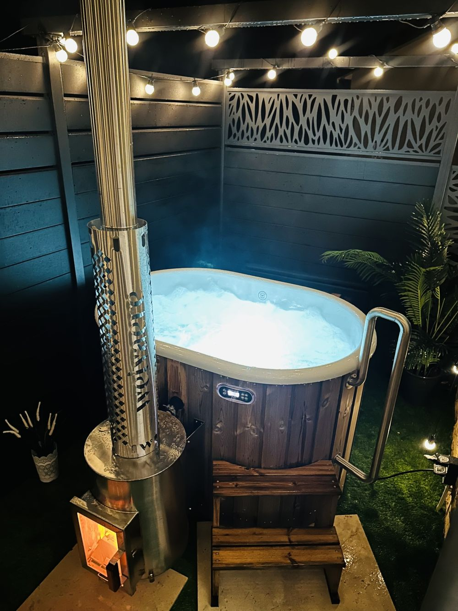
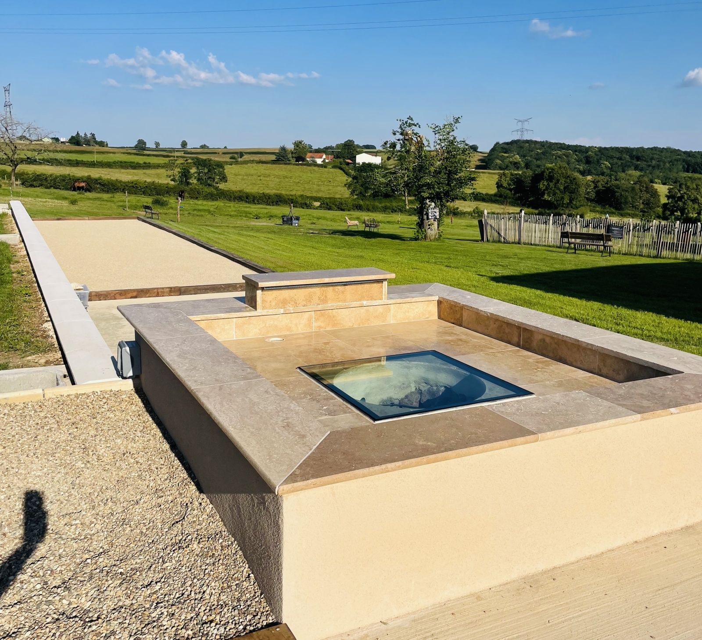
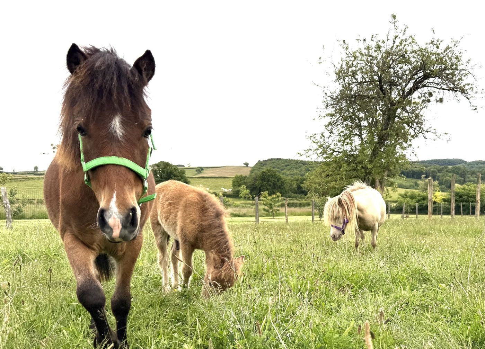
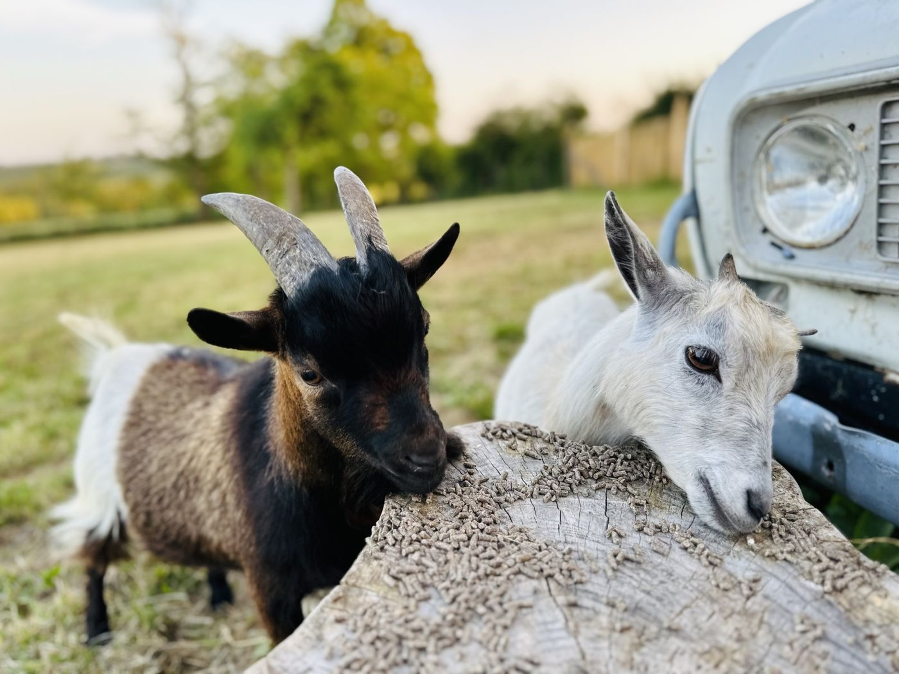
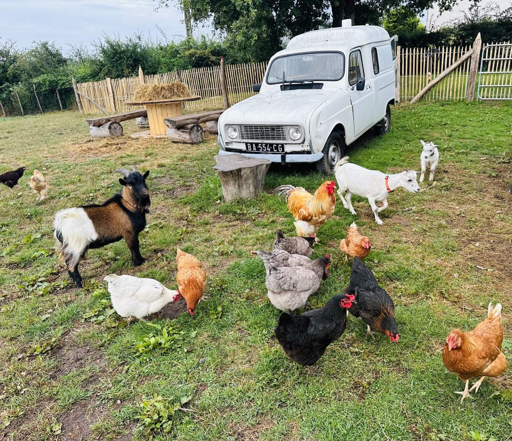
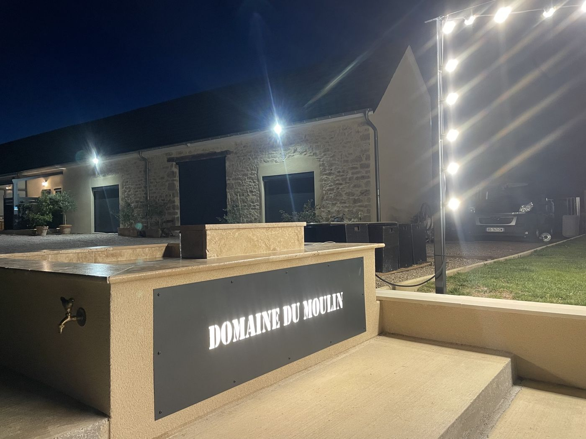
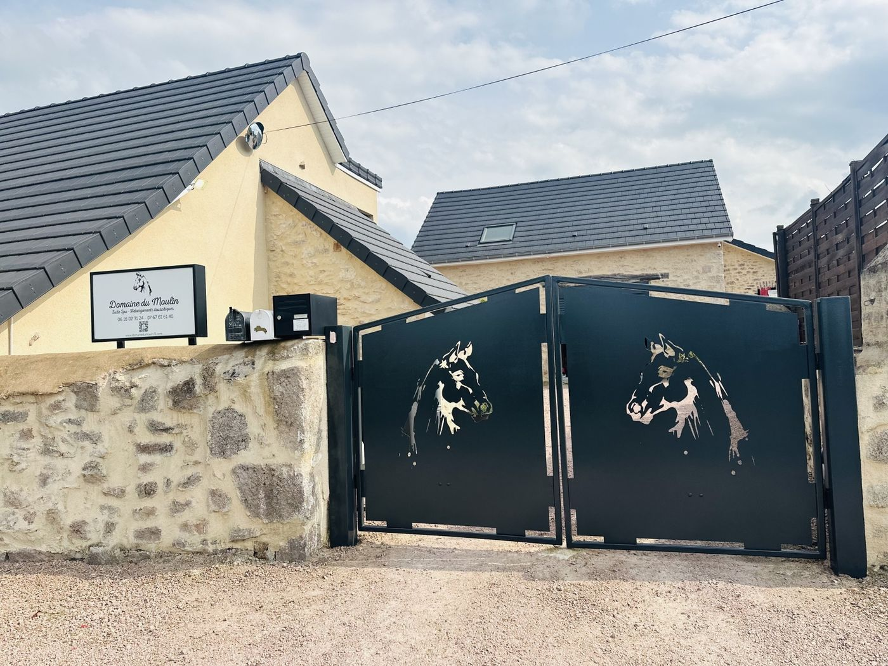
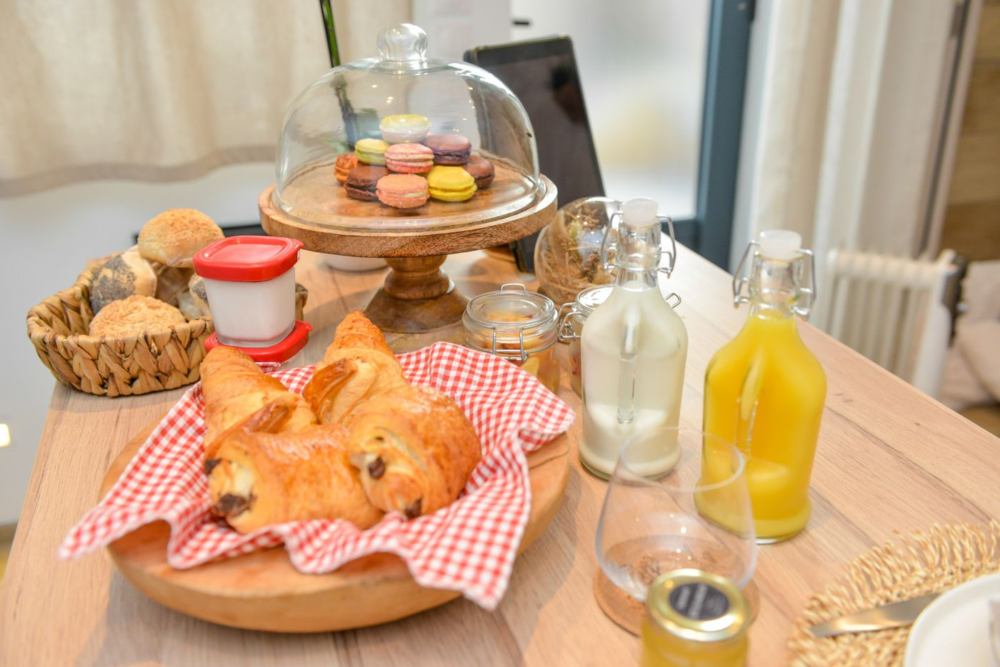
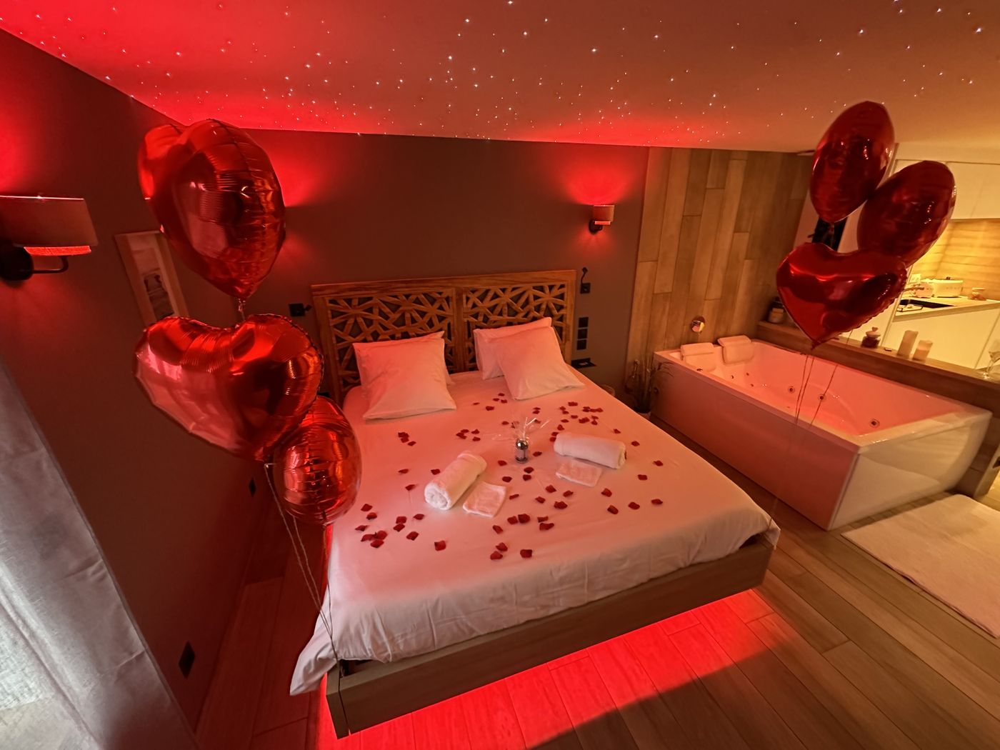

Domaine du Moulin, spa et mini-ferme en Bourgogne
Trois hébergements avec leur spa, au milieu des chevaux et des chèvres, à Saint-Laurent-d’Andenay : à 10 minutes de la gare TGV du Creusot et 30 minutes de Chalon-sur-Saône.
Découvrez nos hébergements
 Pour 2, la love room
Pour 2, la love roomLa Suite Spa
Une baignoire spa XXL, un sauna et un lit « en lévitation » : la suite des amoureux.
 De 2 à 4, la cabane cinéma
De 2 à 4, la cabane cinémaLa Cachette Spa
Une cabane en bois avec son écran de cinéma, sa terrasse et son spa en option.
 Jusqu’à 8, le camion de pompier
Jusqu’à 8, le camion de pompierLe Lodge Spa
Deux chambres, un lit camion de pompier et un jacuzzi en option : le lodge des familles.


Un spa à vous, été comme hiver
Chaque hébergement a son spa privé, à l’intérieur ou sur la terrasse, à l’abri des regards et chauffé toute l’année entre 35 et 40 °C. La Suite a aussi son sauna.
L’été, les piscines privées, inspirées des bassins de cow-boys, sont faites pour se rafraîchir face à la campagne plutôt que pour nager. Elles sont entièrement réservées à votre séjour.
Choisir son spa


Les chevaux, les chèvres et les poules
Autour des hébergements vivent des chevaux, des poneys, des chèvres, des moutons et des poules. Le potager et le verger complètent la ferme.
On pique-nique face aux prés, on joue à la pétanque, on allume le brasero. Les enfants ont une zone de jeux dans les dépendances, ouverte toute l’année.
Découvrir le domaineCompris dans le séjour



Sandra et Rémy vous accueillent
Avant votre arrivée, vous recevez les instructions pour entrer en toute autonomie. Pendant le séjour, Sandra reste joignable par message ou par téléphone, discrète mais toujours à l’écoute.
Une demande particulière ? Le petit déjeuner servi dans votre logement, un dîner, un massage ou une décoration pour une surprise : il suffit de demander.
La vie au domaine
4,9 sur 5 sur Google
« Un accueil chaleureux dans un lieu unique et hors du temps. Très propre et très bien équipé ! Le jacuzzi et le sauna sont tops. Nous avons bien profité du petit déjeuner qui était succulent ! »
« Tout est parfait et magnifique. Le logement est fait avec goût, chaque détail est splendide. Les petits animaux sont trop mignons : c’est vraiment le petit plus. »
« Bon séjour en famille au Domaine du Moulin où nous avons pu profiter de l’ensemble des prestations de qualité : piscine, jacuzzi, jeux pour enfants, petite ferme. »
Les activités à voir

L’abbaye de Cluny
À 45 minutes
Les vignes de Mercurey
La Côte chalonnaise, à 30 minutes
Le canal du Centre
À vélo, à 7 minutes
Les Hospices de Beaune
À 50 minutes
Chalon-sur-Saône
Les quais de la Saône, à 30 minutes
Paray-le-Monial
La basilique, à 40 minutes
Mont-Saint-Vincent
Le village perché, à 20 minutes
Offrir une nuit au Domaine du Moulin
Carte cadeau, coffret ou chèque cadeau : pour un anniversaire, la Saint-Valentin ou simplement pour faire plaisir.
Vos dates, en direct
Choisissez vos dates sur le planning : vous voyez tout de suite ce qui est libre et le prix de votre séjour, taxe de séjour comprise, sans frais de plateforme.
Une surprise à préparer ? Écrivez à Sandra
- 1Vos datesle planning est à jour, les dates prises sont fermées
- 2Votre hébergementla Suite, la Cachette ou le Lodge
- 3Vos optionsle spa, un départ tardif
- 4Vos coordonnéesla demande arrive chez Sandra
Avant de réserver
Comment réserver ?
En ligne, avec le bouton « Réserver » : vous choisissez vos dates sur le planning, votre hébergement et vos options (spa, départ tardif). Le prix du séjour s’affiche aussitôt, taxe de séjour comprise. Vous pouvez aussi appeler Sandra au 06 16 02 31 24.
Le spa est-il compris ?
Dans la Suite Spa, oui : la baignoire spa XXL et le sauna sont dans la suite. À la Cachette et au Lodge, le spa de la terrasse est en option, 50 € la nuit, chauffé entre 35 et 40 °C toute l’année : réservez-le à l’avance pour qu’il soit prêt à votre arrivée.
À quelle heure arrive-t-on ?
L’arrivée est autonome à partir de 17 h : la procédure pour récupérer les clés vous est envoyée le jour de votre arrivée. Le départ se fait à 11 h (10 h au Lodge). Un départ tardif jusqu’à 14 h est possible pour 50 €.
Peut-on venir avec les enfants ?
Oui, à la Cachette (2 adultes et 2 enfants) et au Lodge (jusqu’à 8, avec un lit camion de pompier et un lit bébé). La Suite Spa est réservée aux couples. Les enfants adorent la mini-ferme et la zone de jeux des dépendances.
Peut-on prendre le petit déjeuner sur place ?
Oui, sur demande et en supplément : il est servi directement dans votre logement. Des formules dîner, des massages et des décorations sur mesure (pétales de roses, champagne, ballons) sont aussi proposés.
Les animaux de compagnie sont-ils admis ?
Pas dans les hébergements du domaine, qui sont aussi non-fumeurs. Nos annexes du Creusot et de Montchanin, elles, accueillent les animaux : appelez-nous pour en parler.
Peut-on offrir un séjour ?
Oui : la carte cadeau numérique est envoyée gratuitement par e-mail, la carte artisanale par courrier pour 5 €. Le coffret cadeau comprend le logement et les options choisies, avec ou sans dates ; le chèque cadeau a le montant de votre choix.